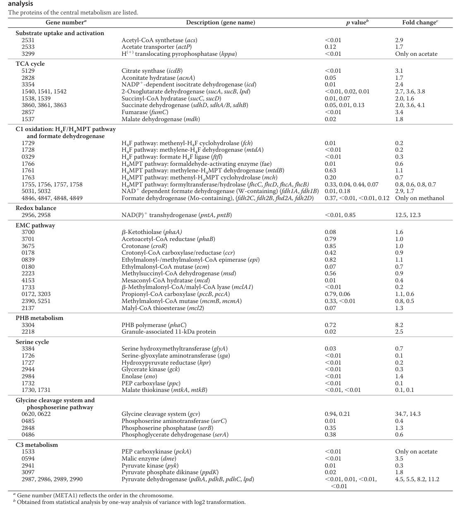

pta encodes phosphate acetyltransferase / phosphotransacetylase (EC 2.3.1.8), the CoA-transfer enzyme of the AckA-Pta node. It catalyzes the reversible transfer of a CoA group onto acetyl phosphate to form acetyl-CoA (and inorganic phosphate), the second step of the two-step ack-pta pathway that interconverts acetate, acetyl phosphate, and acetyl-CoA. Working in tandem with ackA (acetate kinase), the AckA-Pta module links environmental/overflow acetate to central metabolism via acetyl-CoA, and is reversible, so it can also generate acetyl phosphate from acetyl-CoA. Pta belongs to the phosphate acetyl/butaryl transferase family and contains the characteristic PTA_PTB domain (residues 81-297) responsible for the acyltransferase activity. Importantly, the dominant acetate-activation route in M. extorquens AM1 is condition dependent: a systems-level proteomics and 13C-flux study of acetate-grown AM1 (Schneider et al., 2012) found acetate kinase and phosphoacetyl-CoA transferase (AckA-Pta) to be barely detectable while AMP-forming acetyl-CoA synthetase (Acs) was upregulated, leading the authors to predict that acetate activation proceeds mainly via Acs rather than AckA-Pta under that condition. Consistent with general acetate metabolism, the lower-affinity AckA-Pta route is more often associated with acetate overflow/production and acetyl-phosphate availability than with high-affinity acetate scavenging. The Pta node nonetheless remains a recurring target in AM1 metabolic engineering, where acetate is placed in the acetyl-CoA supply network either directly via Acs or via acetyl phosphate by phosphate acetyltransferase.
| GO Term | Evidence | Action | Reason |
|---|---|---|---|
|
GO:0008959
phosphate acetyltransferase activity
|
IEA
GO_REF:0000003 |
ACCEPT |
Summary: This is the primary and specific catalytic activity of Pta - the reversible transfer of an acetyl/CoA group between acetyl phosphate and CoA, interconverting acetyl phosphate and acetyl-CoA. This is the second step of the ack-pta pathway. The EC 2.3.1.8 assignment is well supported by the UniProt name and EC, and falcon deep research independently defines the Pta step as transfer of CoA onto acetyl-phosphate to form acetyl-CoA and places it at the AckA-Pta node, consistent with this annotation. No AM1-specific kinetic characterization (Km, kcat) for C5B1T5 was found, so the assignment rests on family/EC-level evidence.
Supporting Evidence:
file:METEA/pta/pta-uniprot.txt
Full=Phosphate acetyltransferase
file:METEA/pta/pta-deep-research-falcon.md
**transfers a CoA onto acetyl‑phosphate to form acetyl‑CoA
file:METEA/pta/pta-deep-research-falcon.md
**Pta** is the CoA‑transfer enzyme of the **AckA–Pta node** linking acetyl‑phosphate and acetyl‑CoA
|
|
GO:0016740
transferase activity
|
IEA
GO_REF:0000043 |
KEEP AS NON CORE |
Summary: This is a very general parent term for all enzymes that catalyze the transfer of functional groups. While technically correct, the more specific terms like GO:0008959 and GO:0016746 provide much better functional annotation.
|
|
GO:0016746
acyltransferase activity
|
IEA
GO_REF:0000120 |
ACCEPT |
Summary: This accurately describes the enzymatic mechanism - Pta is an acyltransferase that transfers the acetyl group between acetyl phosphate and CoA. This is a more general mechanistic description than the specific GO:0008959 term, and is supported by the UniProt Acyltransferase keyword and the PTA_PTB (phosphate acetyl/butaryl transferase) domain. Falcon deep research corroborates this CoA/acetyl group transfer chemistry at the AckA-Pta node.
Supporting Evidence:
file:METEA/pta/pta-uniprot.txt
Acyltransferase
file:METEA/pta/pta-uniprot.txt
Phosphate acetyl/butaryl transferase
file:METEA/pta/pta-deep-research-falcon.md
**transfers a CoA onto acetyl‑phosphate to form acetyl‑CoA
|
The research report should be a detailed narrative explaining the function, biological processes, and localization of the gene product. Citations should be given for all claims.
You should prioritize authoritative reviews and primary scientific literature when conducting research. You can supplement
this with annotations you find in gene/protein databases, but these can be outdated or inaccurate.
We are specifically interested in the primary function of the gene - for enzymes, what reaction is catalyzed, and what is the substrate specificity? For transporters, what is the substrate? For structural proteins or adapters, what is the broader structural role? For signaling molecules, what is the role in the pathway.
We are interested in where in or outside the cell the gene product carries out its function.
We are also interested in the signaling or biochemical pathways in which the gene functions. We are less interested in broad pleiotropic effects, except where these elucidate the precise role.
Include evidence where possible. We are interested in both experimental evidence as well as inference from structure, evolution, or bioinformatic analysis. Precise studies should be prioritized over high-throughput, where available.
The UniProt target (C5B1T5) is annotated as phosphate acetyltransferase / phosphotransacetylase (Pta) with EC 2.3.1.8, encoded by pta in Methylorubrum extorquens strain AM1. The literature evidence used here explicitly concerns M. extorquens AM1 and discusses acetate kinase (AckA) with phosphoacetyl‑CoA transferase / phosphotransacetylase (Pta) (AckA–Pta), consistent with the UniProt enzyme class and pathway placement. (schneider2012theethylmalonylcoapathway pages 4-5)
Pta is the CoA‑transfer enzyme of the AckA–Pta node linking acetyl‑phosphate and acetyl‑CoA. In a recent (2024) synthetic pathway description, the Pta step is explicitly defined as: a phosphotransacetylase “transfers a CoA onto acetyl‑phosphate to form acetyl‑CoA.” (Landwehr et al., 2024-08-08; URL: https://doi.org/10.1101/2024.08.08.607227) (landwehr2024asyntheticcellfree pages 1-4)
In general metabolic context, the AckA–Pta route is described as a reversible acetate ↔ acetyl‑phosphate ↔ acetyl‑CoA interconversion module that is widely used by bacteria as part of acetate metabolism and central carbon/energy balancing. (kurt2023perspectivesforusing pages 22-23)
A recent acetate-metabolism perspective (2023) summarizes two main acetate→acetyl‑CoA routes: (i) AckA–Pta, which proceeds via acetyl‑phosphate and is reversible; and (ii) AMP‑forming acetyl‑CoA synthetase (Acs), which proceeds via an acetyl‑AMP intermediate. The review notes that AckA–Pta consumes one ATP equivalent, while Acs requires two ATP equivalents, and that Acs has ~35× higher affinity for acetate than AckA–Pta—supporting the common view that Acs dominates under low acetate, whereas AckA–Pta more often contributes to acetate overflow/production due to its lower affinity. (Kurt et al., 2023-10; URL: https://doi.org/10.20944/preprints202310.1117.v1) (kurt2023perspectivesforusing pages 22-23)
A primary systems-level study of M. extorquens AM1 grown on acetate (JBC 2012) combined proteomics with isotope labeling and flux analysis. In acetate-grown cells, the authors report that acetate kinase and phosphoacetyl‑CoA transferase (AckA–Pta) were barely detected (“both <0.01‰”), while acetyl‑CoA synthetase was more abundant (fold change 2.9 on acetate vs methanol). They therefore state: “we predict acetyl‑CoA synthesis by AMP‑forming acetyl‑CoA synthetase.” (Schneider et al., 2012-01; URL: https://doi.org/10.1074/jbc.m111.305219) (schneider2012theethylmalonylcoapathway pages 4-5)
A cropped image of Table 1 (central metabolism proteins upregulated on acetate, including acetyl‑CoA synthetase) supports the proteomics-based inference. (schneider2012theethylmalonylcoapathway media d8f83f16)
Interpretation: For AM1 under the tested acetate-growth condition, Pta is likely not a high-flux acetate activation enzyme, but rather part of a broader acetate/acetyl‑phosphate module whose activity may become condition-dependent (e.g., in other carbon regimes, during acetate production, or in signaling/energy balancing contexts). This is strongly supported by the near-undetectable abundance of AckA/Pta in acetate-grown proteomes. (schneider2012theethylmalonylcoapathway pages 4-5)
In the same AM1 acetate-growth study, quantitative physiology and 13C flux analysis provide context for how acetate carbon is processed:
These data provide a quantitative “baseline phenotype” for AM1 on acetate in which acetate is activated mainly through Acs, and assimilation is coordinated through the EMC pathway rather than the glyoxylate shunt (which AM1 lacks due to missing isocitrate lyase). (schneider2012theethylmalonylcoapathway pages 5-7, schneider2012theethylmalonylcoapathway pages 4-5)
No direct experimental subcellular localization for AM1 Pta was identified in the retrieved texts. The AM1 acetate-growth study mentions an acetate transporter (suggesting a membrane protein), but does not provide localization for AckA/Pta or Acs beyond this. (schneider2012theethylmalonylcoapathway pages 4-5)
A 2024 bioRxiv report describes a synthetic cell-free pathway to produce acetyl‑CoA from C1 substrates, using a designed sequence in which a phosphoketolase forms acetyl‑phosphate and Pta converts acetyl‑phosphate to acetyl‑CoA. This reinforces the modern view of Pta as a swappable module for acetyl‑CoA generation from acetyl‑phosphate in engineered systems. (Landwehr et al., 2024-08-08; URL: https://doi.org/10.1101/2024.08.08.607227) (landwehr2024asyntheticcellfree pages 1-4)
A 2024 Microbial Cell Factories study engineered Methylorubrum extorquens for methylotrophic glycolic acid (GA) production. Although it does not focus on pta directly, it quantifies performance and emphasizes central metabolism constraints around glyoxylate/EMC pathway—metabolic neighborhoods that interface with acetyl‑CoA supply and acetate/acetyl‑phosphate balancing in methylotroph physiology.
Key quantitative results include:
* Theoretical yield: predicted 1.0 C-mol GA per C-mol methanol (model-based). (Dietz et al., 2024-12; URL: https://doi.org/10.1186/s12934-024-02583-y) (dietz2024anovelengineered pages 1-2)
* Fed-batch titers and yields: GA titer 0.67 g/L after 41 h; methanol yield 67.0 ± 1.8 mg GA gMeOH−1; specific GA rate 35.5 ± 0.9 mg GA gCDW−1 h−1; LA byproduct titer ~0.54 g/L after 41 h with 54 ± 0.9 mg LA gMeOH−1. (dietz2024anovelengineered pages 17-19)
* Glyoxylate feeding: GA titer increased to 1.04 g/L (four-fold in that condition) and qGA up to 1.21 mmol gCDW−1 h−1 with a product-substrate yield 0.21 C-mol GA per C-mol (MeOH+glyoxylate). (dietz2024anovelengineered pages 15-16)
Expert-level interpretation: For AM1-related strain engineering, “acetyl‑CoA supply” is frequently limiting for acetyl‑CoA-derived products; however, in acetate-grown AM1, the dominant acetate activation is Acs rather than AckA/Pta. This suggests that engineering efforts that rely on acetate uptake at low concentrations may need to prioritize Acs and energy coupling, while AckA/Pta may matter more for acetate overflow control, acetyl‑phosphate availability, or specific engineered routes that explicitly use acetyl‑phosphate as an intermediate. This interpretation is supported by the AM1 proteomics evidence and general acetate metabolism comparison. (schneider2012theethylmalonylcoapathway pages 4-5, kurt2023perspectivesforusing pages 22-23)
A 2019 study engineered M. extorquens AM1 to express cis‑aconitate decarboxylase and produce itaconic acid (ITA) from methanol and other substrates. The authors explicitly place phosphate acetyltransferase in acetate/acetyl‑CoA interconversion by noting that acetate can be converted to acetyl‑CoA either directly by acetyl‑CoA synthetase or via acetyl‑phosphate by phosphate acetyltransferase. (Lim et al., 2019-05; URL: https://doi.org/10.3389/fmicb.2019.01027) (lim2019designingandengineering pages 10-11)
Reported ITA metrics (selected):
* Batch on methanol: highest ITA titer 31.6 ± 5.5 mg/L. (lim2019designingandengineering pages 1-2)
* Fed-batch (60% DO): titer 5.4 ± 0.2 mg/L; productivity 0.056 ± 0.002 mg/L/h. (lim2019designingandengineering pages 1-2)
* From acetate (example condition): 0.22 ± 0.01 mg/L ITA detected after 5 mM acetate consumption in one medium/condition. (lim2019designingandengineering pages 3-4)
This demonstrates a real engineered context where the acetate-to-acetyl‑CoA node (including the Pta route) is part of pathway reasoning, even if not the dominant acetate activation route during wild-type acetate growth. (schneider2012theethylmalonylcoapathway pages 4-5, lim2019designingandengineering pages 10-11)
A 2023 perspective summarizes that acetate is used as an industrially relevant carbon feedstock, but can be toxic at concentrations below 5 g/L and yields relatively low energy (~10 ATP/mol acetate versus ~38 ATP/mol glucose). Such constraints shape process design and help explain why acetate assimilation strategy (Acs vs AckA–Pta) is a key engineering decision. (Kurt et al., 2023-10; URL: https://doi.org/10.20944/preprints202310.1117.v1) (kurt2023perspectivesforusing pages 22-23)
Supported by retrieved evidence:
* Pta is the enzyme converting acetyl‑phosphate → acetyl‑CoA (CoA transfer onto acetyl‑phosphate). (landwehr2024asyntheticcellfree pages 1-4)
* In acetate-grown M. extorquens AM1, AckA/Pta are barely detected, while Acs is upregulated; acetate activation is inferred to proceed mainly through AMP-forming Acs. (schneider2012theethylmalonylcoapathway pages 4-5)
* AM1 acetate growth involves substantial carbon oxidation via TCA and assimilation via EMC, with quantitative flux partitioning and PHB accumulation. (schneider2012theethylmalonylcoapathway pages 5-7, schneider2012theethylmalonylcoapathway pages 3-4)
Not supported by retrieved evidence (do not infer without additional sources):
* AM1-specific Pta kinetic parameters (Km, kcat) or substrate specificity beyond acetyl‑phosphate/CoA.
* AM1-specific pta knockout/overexpression phenotypes.
* Direct experimental subcellular localization for AM1 Pta.
The following table consolidates the key evidence-backed points for this functional annotation.
| Topic | Key finding (one sentence) | Organism/condition | Quantitative values (if any) | Primary source with year and URL | Citation ID |
|---|---|---|---|---|---|
| Reaction | Pta is the phosphotransacetylase/phosphate acetyltransferase of the AckA–Pta node, catalyzing transfer of CoA onto acetyl-phosphate to form acetyl-CoA, consistent with UniProt EC 2.3.1.8 annotation. | General biochemical definition; used here to verify annotation of M. extorquens AM1 Pta | No organism-specific kinetics retrieved | Landwehr et al., 2024, https://doi.org/10.1101/2024.08.08.607227 | (landwehr2024asyntheticcellfree pages 1-4) |
| Pathway role | In acetate metabolism, the reversible AckA–Pta route links acetate, acetyl-phosphate, and acetyl-CoA and is generally more associated with low-affinity acetate utilization/acetate production than the high-affinity Acs route. | General acetate assimilation/production overview | AckA–Pta uses 1 ATP equivalent; Acs has ~35-fold higher acetate affinity; acetate toxicity can occur below 5 g/L | Kurt et al., 2023, https://doi.org/10.20944/preprints202310.1117.v1 | (kurt2023perspectivesforusing pages 22-23) |
| Acetate activation in AM1 | During growth of Methylobacterium/Methylorubrum extorquens AM1 on acetate, AckA and Pta were barely detected and the authors inferred that acetate is activated mainly by AMP-forming acetyl-CoA synthetase rather than AckA–Pta. | M. extorquens AM1 grown on acetate vs methanol | Acetyl-CoA synthetase fold change 2.9 on acetate; AckA and Pta both <0.01‰ abundance | Schneider et al., 2012, https://doi.org/10.1074/jbc.m111.305219 | (schneider2012theethylmalonylcoapathway pages 4-5) |
| Quantitative flux/phenotype data | Acetate-grown AM1 partitions acetyl-CoA mainly to the TCA cycle for oxidation and to the EMC pathway for assimilation, showing the physiological context in which any Pta activity would be secondary under these conditions. | M. extorquens AM1, 13C flux analysis during growth on acetate | Specific acetate uptake 4.0 ± 0.4 mmol gCDW^-1 h^-1; 68% of acetyl-CoA to TCA; 98% of that oxidized to CO2; ~21% through EMC; ~0.8 mmol g^-1 h^-1 CO2 assimilated; PHB content 13 ± 0.4% on acetate vs 2 ± 0.05% on methanol; ~5% acetyl-CoA to PHB | Schneider et al., 2012, https://doi.org/10.1074/jbc.m111.305219 | (schneider2012theethylmalonylcoapathway pages 5-7, schneider2012theethylmalonylcoapathway pages 3-4) |
| Engineering/application examples | Engineered M. extorquens AM1 strains for itaconic acid production explicitly place phosphate acetyltransferase in the acetate-to-acetyl-CoA network, indicating the Pta node remains relevant for carbon-flux engineering even when not the dominant acetate activation route in wild-type acetate growth. | Engineered M. extorquens AM1 for itaconic acid production | ITA titer 31.6 ± 5.5 mg/L in batch on methanol; 5.4 ± 0.2 mg/L and 0.056 ± 0.002 mg/L/h in fed-batch; 0.22 ± 0.01 mg/L detected after 5 mM acetate consumed in one condition | Lim et al., 2019, https://doi.org/10.3389/fmicb.2019.01027 | (lim2019designingandengineering pages 10-11, lim2019designingandengineering pages 1-2, lim2019designingandengineering pages 3-4) |
| Engineering/application examples | Recent metabolic engineering in Methylorubrum extorquens exploits nearby central-carbon nodes (glyoxylate/EMC/acetyl-CoA-adjacent metabolism), underscoring practical importance of accurately annotating enzymes like Pta within acetyl-CoA supply and carbon-partitioning networks. | Engineered M. extorquens for glycolic acid production | Theoretical yield 1.0 C-mol glycolic acid per C-mol methanol; best fed-batch total glycolic acid + lactic acid 1.2 g/L; GA titer 0.67 g/L after 41 h; YGA/MeOH 67.0 ± 1.8 mg/g; qP 35.5 ± 0.9 mg gCDW^-1 h^-1 | Dietz et al., 2024, https://doi.org/10.1186/s12934-024-02583-y | (dietz2024anovelengineered pages 17-19, dietz2024anovelengineered pages 15-16, dietz2024anovelengineered pages 1-2) |
| Localization | No direct experimental subcellular localization for Pta in M. extorquens AM1 was found in the retrieved literature; the available evidence only mentions an acetate transporter as membrane-associated while acetate-activation enzymes were discussed without localization data. | M. extorquens AM1 acetate-growth proteomics | None reported for Pta | Schneider et al., 2012, https://doi.org/10.1074/jbc.m111.305219 | (schneider2012theethylmalonylcoapathway pages 4-5) |
Table: This table summarizes evidence-backed functional annotation points for Pta (UniProt C5B1T5) in Methylorubrum extorquens AM1, including biochemical role, organism-specific acetate-growth evidence, pathway context, and engineering relevance. It is useful as a compact evidence map distinguishing direct AM1 observations from broader pathway-level inferences.
References
(schneider2012theethylmalonylcoapathway pages 4-5): Kathrin Schneider, Rémi Peyraud, Patrick Kiefer, Philipp Christen, Nathanaël Delmotte, Stéphane Massou, Jean-Charles Portais, and Julia A. Vorholt. The ethylmalonyl-coa pathway is used in place of the glyoxylate cycle by methylobacterium extorquens am1 during growth on acetate. Journal of Biological Chemistry, 287:757-766, Jan 2012. URL: https://doi.org/10.1074/jbc.m111.305219, doi:10.1074/jbc.m111.305219. This article has 106 citations and is from a domain leading peer-reviewed journal.
(landwehr2024asyntheticcellfree pages 1-4): Grant M. Landwehr, Bastian Vogeli, Cong Tian, Bharti Singal, Anika Gupta, Rebeca Lion, Edward H. Sargent, Ashty S. Karim, and Michael C. Jewett. A synthetic cell-free pathway for biocatalytic upgrading of one-carbon substrates. bioRxiv, Aug 2024. URL: https://doi.org/10.1101/2024.08.08.607227, doi:10.1101/2024.08.08.607227. This article has 6 citations.
(kurt2023perspectivesforusing pages 22-23): Elif Kurt, Jiansong Qin, Alexandria R Williams, Youbo Zhao, and Dongming Xie. Perspectives for using co2 as a feedstock for biomanufacturing. Unknown journal, Oct 2023. URL: https://doi.org/10.20944/preprints202310.1117.v1, doi:10.20944/preprints202310.1117.v1.
(schneider2012theethylmalonylcoapathway media d8f83f16): Kathrin Schneider, Rémi Peyraud, Patrick Kiefer, Philipp Christen, Nathanaël Delmotte, Stéphane Massou, Jean-Charles Portais, and Julia A. Vorholt. The ethylmalonyl-coa pathway is used in place of the glyoxylate cycle by methylobacterium extorquens am1 during growth on acetate. Journal of Biological Chemistry, 287:757-766, Jan 2012. URL: https://doi.org/10.1074/jbc.m111.305219, doi:10.1074/jbc.m111.305219. This article has 106 citations and is from a domain leading peer-reviewed journal.
(schneider2012theethylmalonylcoapathway pages 3-4): Kathrin Schneider, Rémi Peyraud, Patrick Kiefer, Philipp Christen, Nathanaël Delmotte, Stéphane Massou, Jean-Charles Portais, and Julia A. Vorholt. The ethylmalonyl-coa pathway is used in place of the glyoxylate cycle by methylobacterium extorquens am1 during growth on acetate. Journal of Biological Chemistry, 287:757-766, Jan 2012. URL: https://doi.org/10.1074/jbc.m111.305219, doi:10.1074/jbc.m111.305219. This article has 106 citations and is from a domain leading peer-reviewed journal.
(schneider2012theethylmalonylcoapathway pages 5-7): Kathrin Schneider, Rémi Peyraud, Patrick Kiefer, Philipp Christen, Nathanaël Delmotte, Stéphane Massou, Jean-Charles Portais, and Julia A. Vorholt. The ethylmalonyl-coa pathway is used in place of the glyoxylate cycle by methylobacterium extorquens am1 during growth on acetate. Journal of Biological Chemistry, 287:757-766, Jan 2012. URL: https://doi.org/10.1074/jbc.m111.305219, doi:10.1074/jbc.m111.305219. This article has 106 citations and is from a domain leading peer-reviewed journal.
(dietz2024anovelengineered pages 1-2): Katharina Dietz, Carina Sagstetter, Melanie Speck, Arne Roth, Steffen Klamt, and Jonathan Thomas Fabarius. A novel engineered strain of methylorubrum extorquens for methylotrophic production of glycolic acid. Microbial Cell Factories, Dec 2024. URL: https://doi.org/10.1186/s12934-024-02583-y, doi:10.1186/s12934-024-02583-y. This article has 10 citations and is from a peer-reviewed journal.
(dietz2024anovelengineered pages 17-19): Katharina Dietz, Carina Sagstetter, Melanie Speck, Arne Roth, Steffen Klamt, and Jonathan Thomas Fabarius. A novel engineered strain of methylorubrum extorquens for methylotrophic production of glycolic acid. Microbial Cell Factories, Dec 2024. URL: https://doi.org/10.1186/s12934-024-02583-y, doi:10.1186/s12934-024-02583-y. This article has 10 citations and is from a peer-reviewed journal.
(dietz2024anovelengineered pages 15-16): Katharina Dietz, Carina Sagstetter, Melanie Speck, Arne Roth, Steffen Klamt, and Jonathan Thomas Fabarius. A novel engineered strain of methylorubrum extorquens for methylotrophic production of glycolic acid. Microbial Cell Factories, Dec 2024. URL: https://doi.org/10.1186/s12934-024-02583-y, doi:10.1186/s12934-024-02583-y. This article has 10 citations and is from a peer-reviewed journal.
(lim2019designingandengineering pages 10-11): Chee Kent Lim, Juan C. Villada, Annie Chalifour, Maria F. Duran, Hongyuan Lu, and Patrick K. H. Lee. Designing and engineering methylorubrum extorquens am1 for itaconic acid production. Frontiers in Microbiology, May 2019. URL: https://doi.org/10.3389/fmicb.2019.01027, doi:10.3389/fmicb.2019.01027. This article has 54 citations and is from a peer-reviewed journal.
(lim2019designingandengineering pages 1-2): Chee Kent Lim, Juan C. Villada, Annie Chalifour, Maria F. Duran, Hongyuan Lu, and Patrick K. H. Lee. Designing and engineering methylorubrum extorquens am1 for itaconic acid production. Frontiers in Microbiology, May 2019. URL: https://doi.org/10.3389/fmicb.2019.01027, doi:10.3389/fmicb.2019.01027. This article has 54 citations and is from a peer-reviewed journal.
(lim2019designingandengineering pages 3-4): Chee Kent Lim, Juan C. Villada, Annie Chalifour, Maria F. Duran, Hongyuan Lu, and Patrick K. H. Lee. Designing and engineering methylorubrum extorquens am1 for itaconic acid production. Frontiers in Microbiology, May 2019. URL: https://doi.org/10.3389/fmicb.2019.01027, doi:10.3389/fmicb.2019.01027. This article has 54 citations and is from a peer-reviewed journal.

id: C5B1T5
gene_symbol: pta
product_type: PROTEIN
taxon:
id: NCBITaxon:272630
label: Methylorubrum extorquens AM1
description: 'pta encodes phosphate acetyltransferase / phosphotransacetylase (EC
2.3.1.8), the CoA-transfer enzyme of the AckA-Pta node. It catalyzes the reversible
transfer of a CoA group onto acetyl phosphate to form acetyl-CoA (and inorganic
phosphate), the second step of the two-step ack-pta pathway that interconverts acetate,
acetyl phosphate, and acetyl-CoA. Working in tandem with ackA (acetate kinase),
the AckA-Pta module links environmental/overflow acetate to central metabolism via
acetyl-CoA, and is reversible, so it can also generate acetyl phosphate from acetyl-CoA.
Pta belongs to the phosphate acetyl/butaryl transferase family and contains the
characteristic PTA_PTB domain (residues 81-297) responsible for the acyltransferase
activity. Importantly, the dominant acetate-activation route in M. extorquens AM1
is condition dependent: a systems-level proteomics and 13C-flux study of acetate-grown
AM1 (Schneider et al., 2012) found acetate kinase and phosphoacetyl-CoA transferase
(AckA-Pta) to be barely detectable while AMP-forming acetyl-CoA synthetase (Acs)
was upregulated, leading the authors to predict that acetate activation proceeds
mainly via Acs rather than AckA-Pta under that condition. Consistent with general
acetate metabolism, the lower-affinity AckA-Pta route is more often associated with
acetate overflow/production and acetyl-phosphate availability than with high-affinity
acetate scavenging. The Pta node nonetheless remains a recurring target in AM1 metabolic
engineering, where acetate is placed in the acetyl-CoA supply network either directly
via Acs or via acetyl phosphate by phosphate acetyltransferase.'
existing_annotations:
- term:
id: GO:0008959
label: phosphate acetyltransferase activity
evidence_type: IEA
original_reference_id: GO_REF:0000003
review:
summary: This is the primary and specific catalytic activity of Pta - the reversible
transfer of an acetyl/CoA group between acetyl phosphate and CoA, interconverting
acetyl phosphate and acetyl-CoA. This is the second step of the ack-pta pathway.
The EC 2.3.1.8 assignment is well supported by the UniProt name and EC, and falcon
deep research independently defines the Pta step as transfer of CoA onto acetyl-phosphate
to form acetyl-CoA and places it at the AckA-Pta node, consistent with this annotation.
No AM1-specific kinetic characterization (Km, kcat) for C5B1T5 was found, so the
assignment rests on family/EC-level evidence.
action: ACCEPT
supported_by:
- reference_id: file:METEA/pta/pta-uniprot.txt
supporting_text: Full=Phosphate acetyltransferase
- reference_id: file:METEA/pta/pta-deep-research-falcon.md
supporting_text: "**transfers a CoA onto acetyl‑phosphate to form acetyl‑\
CoA"
- reference_id: file:METEA/pta/pta-deep-research-falcon.md
supporting_text: "**Pta** is the CoA‑transfer enzyme of the **AckA–\
Pta node** linking acetyl‑phosphate and acetyl‑CoA"
- term:
id: GO:0016740
label: transferase activity
evidence_type: IEA
original_reference_id: GO_REF:0000043
review:
summary: This is a very general parent term for all enzymes that catalyze the
transfer of functional groups. While technically correct, the more specific
terms like GO:0008959 and GO:0016746 provide much better functional annotation.
action: KEEP_AS_NON_CORE
- term:
id: GO:0016746
label: acyltransferase activity
evidence_type: IEA
original_reference_id: GO_REF:0000120
review:
summary: This accurately describes the enzymatic mechanism - Pta is an acyltransferase
that transfers the acetyl group between acetyl phosphate and CoA. This is a more
general mechanistic description than the specific GO:0008959 term, and is supported
by the UniProt Acyltransferase keyword and the PTA_PTB (phosphate acetyl/butaryl
transferase) domain. Falcon deep research corroborates this CoA/acetyl group
transfer chemistry at the AckA-Pta node.
action: ACCEPT
supported_by:
- reference_id: file:METEA/pta/pta-uniprot.txt
supporting_text: Acyltransferase
- reference_id: file:METEA/pta/pta-uniprot.txt
supporting_text: Phosphate acetyl/butaryl transferase
- reference_id: file:METEA/pta/pta-deep-research-falcon.md
supporting_text: "**transfers a CoA onto acetyl‑phosphate to form acetyl‑\
CoA"
core_functions:
- description: Pta catalyzes the reversible transfer of a CoA/acetyl group between
acetyl phosphate and coenzyme A, interconverting acetyl phosphate and acetyl-CoA
(with inorganic phosphate). This is the second step of the two-step ack-pta pathway,
working in tandem with ackA (acetate kinase) at the AckA-Pta node that links acetate,
acetyl phosphate, and acetyl-CoA. The reaction is reversible, so Pta can both form
acetyl-CoA from acetyl phosphate and generate the high-energy intermediate acetyl
phosphate from acetyl-CoA during overflow metabolism. The enzyme contains a phosphate
acetyl/butaryl transferase (PTA_PTB) domain responsible for this acyltransferase
activity. In M. extorquens AM1, the physiological prominence of this node is condition
dependent - during growth on acetate, AckA-Pta is barely expressed and acetate
activation is predicted to proceed mainly through AMP-forming acetyl-CoA synthetase
(Acs); the lower-affinity AckA-Pta route is more typically associated with acetate
overflow/production and acetyl-phosphate provision than with high-affinity acetate
scavenging.
molecular_function:
id: GO:0008959
label: phosphate acetyltransferase activity
supported_by:
- reference_id: file:METEA/pta/pta-uniprot.txt
supporting_text: Full=Phosphate acetyltransferase
- reference_id: file:METEA/pta/pta-deep-research-falcon.md
supporting_text: "**transfers a CoA onto acetyl‑phosphate to form acetyl‑\
CoA"
- reference_id: file:METEA/pta/pta-deep-research-falcon.md
supporting_text: "**Pta** is the CoA‑transfer enzyme of the **AckA–Pta\
\ node** linking acetyl‑phosphate and acetyl‑CoA"
references:
- id: file:METEA/pta/pta-uniprot.txt
title: UniProt entry for pta phosphate acetyltransferase
findings: []
- id: file:METEA/pta/pta-deep-research-falcon.md
title: Falcon deep research report for pta (phosphate acetyltransferase / phosphotransacetylase,
C5B1T5) in Methylorubrum extorquens AM1
findings:
- supporting_text: "**transfers a CoA onto acetyl‑phosphate to form acetyl‑\
CoA"
reference_section_type: OTHER
- supporting_text: "**Pta** is the CoA‑transfer enzyme of the **AckA–Pta\
\ node** linking acetyl‑phosphate and acetyl‑CoA"
reference_section_type: OTHER
- supporting_text: "reversible** acetate ↔ acetyl‑phosphate ↔ acetyl‑\
CoA interconversion module"
reference_section_type: OTHER
- supporting_text: "AckA–Pta consumes one ATP equivalent"
reference_section_type: OTHER
- supporting_text: "Acs has ~35× higher affinity for acetate"
reference_section_type: OTHER
- supporting_text: more often contributes to acetate overflow/production due to its
lower affinity
reference_section_type: OTHER
- supporting_text: "acetate kinase and phosphoacetyl‑CoA transferase (AckA–\
Pta) were barely detected"
reference_section_type: OTHER
- supporting_text: "we predict acetyl‑CoA synthesis by AMP‑forming acetyl‑\
CoA synthetase"
reference_section_type: OTHER
- supporting_text: Pta is likely **not a high-flux acetate activation enzyme**
reference_section_type: OTHER
- supporting_text: "via acetyl‑phosphate by phosphate acetyltransferase"
reference_section_type: OTHER
- supporting_text: No direct experimental subcellular localization for AM1 Pta was
identified in the retrieved texts
reference_section_type: OTHER
- id: GO_REF:0000003
title: Gene Ontology annotation based on Enzyme Commission mapping
findings: []
- id: GO_REF:0000043
title: Gene Ontology annotation based on UniProtKB/Swiss-Prot keyword mapping
findings: []
- id: GO_REF:0000120
title: Combined Automated Annotation using Multiple IEA Methods.
findings: []
status: COMPLETE
tags:
- metea
{kind=link}